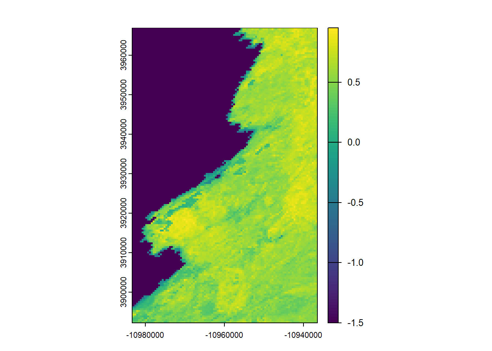

# install.packages("MODISTools")
# install.packages("tidyverse")
# install.packages("terra")
# install.packages("lubridate")
# install.packages("animation")
# install.packages("gganimate")This project was created with the help of the tutorial below:
https://jdmwhite.github.io/Intro_to_Spatial/NDVI_time_series.html
The study area for this project is Western Morro Bay in the Estuary. It is located in the area below.
I began with installing all of the needed packages below.
After installing, I used the library function in order to allow my project, and following R code to be able to identify function within each package
library(MODISTools)
library(tidyverse)── Attaching core tidyverse packages ──────────────────────── tidyverse 2.0.0 ──
✔ dplyr 1.1.4 ✔ readr 2.1.5
✔ forcats 1.0.0 ✔ stringr 1.5.1
✔ ggplot2 3.5.2 ✔ tibble 3.2.1
✔ lubridate 1.9.4 ✔ tidyr 1.3.1
✔ purrr 1.0.4
── Conflicts ────────────────────────────────────────── tidyverse_conflicts() ──
✖ dplyr::filter() masks stats::filter()
✖ dplyr::lag() masks stats::lag()
ℹ Use the conflicted package (<http://conflicted.r-lib.org/>) to force all conflicts to become errorslibrary(terra)terra 1.8.50
Attaching package: 'terra'
The following object is masked from 'package:tidyr':
extractlibrary(lubridate)
library(animation)
library(gganimate)
Attaching package: 'gganimate'
The following object is masked from 'package:terra':
animateFirst I started with utilizing MODISTools. I needed to look at what dates had available area for a specific area. I went on google maps and selected the Morro Bay area in San Luis Obispo County. I then took the lat/long from google maps and put it into the tool. The tool mt_dates lists all dates that MODIS has data for. Using the VNP13A1 product, I was able to search specifically for NDVI bands as well as a few other bands.
dates <- mt_dates(product = "VNP13A1", lat = 35.339467, lon = -120.826453)
head(dates) modis_date calendar_date
1 A2012017 2012-01-17
2 A2012025 2012-01-25
3 A2012033 2012-02-02
4 A2012041 2012-02-10
5 A2012049 2012-02-18
6 A2012057 2012-02-26Next, I must extract the data/dataframes for each data within a specific range. Below is the inputted lat/long as well as utilizing that product again. The new part of the code this time is from the MODISTools subset, I input the data range that I want data extracted from. I also pull the dimensions of the area from the center of tat lat/long that I provided.
slo_ndvi <- mt_subset(product = "VNP13A1",
lat = 35.339467,
lon = -120.826453,
band = c("500_m_16_days_NDVI",
"500_m_16_days_pixel_reliability"),
start = "2023-01-01",
end = "2023-12-30",
km_lr = 25,
km_ab = 40,
site_name = "SLO",
internal = TRUE,
progress = TRUE)Downloading chunks:
|
| | 0%
|
|============== | 20%
|
|============================ | 40%
|
|========================================== | 60%
|
|======================================================== | 80%
|
|======================================================================| 100%Downloading chunks:
|
| | 0%
|
|============== | 20%
|
|============================ | 40%
|
|========================================== | 60%
|
|======================================================== | 80%
|
|======================================================================| 100%This portion below is used for the NDVI median that I will provide at the end. Specifically this code was modified off of the following GITHUB: https://jdmwhite.github.io/Intro_to_Spatial/NDVI_time_series.html. This code utilizes the slo_ndvi that was pulled from MODIS above. Then it pipelines the data through the 500m NDVI band, then groups it by day of the year, then takes the median from the dataset. In the end the pipeline outputs the slo_med_ndvi.
# Summarise
slo_ndvi %>%
filter(band == "500_m_16_days_NDVI") %>%
group_by(calendar_date) %>%
summarise(doy = yday(as_date(calendar_date)),
ndvi_median = median(value * as.numeric(scale))) %>%
distinct(doy, .keep_all = TRUE) -> slo_med_ndviWarning: Returning more (or less) than 1 row per `summarise()` group was deprecated in
dplyr 1.1.0.
ℹ Please use `reframe()` instead.
ℹ When switching from `summarise()` to `reframe()`, remember that `reframe()`
always returns an ungrouped data frame and adjust accordingly.`summarise()` has grouped output by 'calendar_date'. You can override using the
`.groups` argument.Utilizing the slo_med_ndvi and ggplot, we input the refined data and plot it by doy(date of year) and the median NDVI. The line in the middle is showing the average change, between the median in order to smooth the data.
# Plot
ggplot(slo_med_ndvi, aes(x = doy, y = ndvi_median)) +
geom_point() +
geom_smooth(method = 'loess') +
labs(x = 'Day of Year', y = 'NDVI (median)') +
theme_classic() `geom_smooth()` using formula = 'y ~ x'
This line is utilized to create the plot’s export and downloads it into my exports folder.
ggsave('Exports/slo_med_ndvi.png',
create.dir = TRUE ,
width = 120, height = 80, units = c('mm'), dpi = 'retina', bg = 'white')
This next portion was mainly taken from the tutorial but updated by me in order allow it to apply to this project specifically. The following R code utilizes ggplot and animation in order to create a gif that shows the change in the median NDVI overtime by day in accordance to the month.
anim_ts <- ggplot(slo_med_ndvi, aes(x = as_date(calendar_date), y = ndvi_median)) +
geom_point(aes(group = seq_along(doy), col = ndvi_median)) +
geom_line(aes(col = ndvi_median), lwd = 1) +
scale_colour_gradientn(colours = rev(terrain.colors(7)),limits = c(0,1), breaks = seq(0,1,0.25)) +
scale_x_date(breaks = scales::date_breaks('months'),labels = scales::date_format('%b')) +
scale_y_continuous(limits = c(0,1), breaks = seq(0,1,0.25)) +
labs(x = 'Date', y = 'NDVI (median)',
title = 'Morro Bay Estuary NDVI over 2023',
subtitle = 'VIIRS/S-NPP Vegetation Indices 16-Day 500m') +
theme_classic() +
theme(legend.position = 'none') +
gganimate::transition_reveal(doy) This code actually animates the gif to a set framing and fps which then renders it out into the same exports folder that was used before. This is how I finalized creating the NDVI plot gif that is provided.
anim_ts_param <- gganimate::animate(anim_ts, fps = 10,
width = 720, height = 480,
res = 150,
renderer = gifski_renderer("Exports/animation2.gif"))Now to create the plotted raster gif the following code was utilized.
I then took the slo_ndvi data, which in this form is just the raw data, from before the plotting on the graph. Then through the filter() function I was also able to filter out the specific NDVI band. I resulted in the slo_filter.
slo_filter <- filter(slo_ndvi, band == "500_m_16_days_NDVI")Using the slo_filter I input this in to the MODISTools to terra function which ultimately takes a MODISTools dataframe, which is specific to this package. Then it converts it into a terra raster. The export from this was modisrast.
modisrast <- mt_to_terra(df = slo_filter)To test to make sure that this was working I selected a specific raster that was provided. I typed names(modisrast) to find all of the raster names into the console within R studio. I selected at random and chose the date 2023-12-19 just to test proof of concept and plotting.
plot(modisrast["2023-12-19"]) 
Now that I know that my raster has been successfully converted from the MODISTools dataframe I was able to attempt to throw this into a code that will provide a gif over the full year. Using the animation package, and a bit of help from chatgpt to actually get the syntax for this package as I have not used it before, I was able to have this code. The code selects the dates from the modisrast list, then by name (that being the dates) each one is pulled in. From this, the package creates the gif, and R studio opens it locally to be saved.
saveGIF({
for (i in 1:nlyr(modisrast)) {
plot(modisrast[[i]], main = names(modisrast)[i])
}
}, movie.name = "modis_terra.gif", interval = 0.5)Output at: modis_terra.gif[1] TRUEIn the future it would be beneficial to do the following: Create the NDVI final deliverable with NDVI in median. For this current project, R and MODIS due to specific dataframe types was returning empty rasters, due to empty data frames. Also applying this skill to a new study area would be a great way to expand upon this in the future.